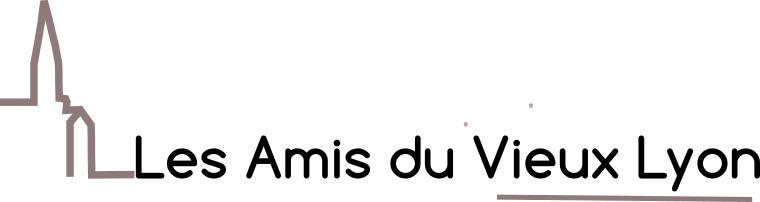

 sont une association loi 1901, ayant pour objectif de préserver et de mettre en valeur le patrimoine culturel du quartier médiéval et Renaissance de la ville de Lyon. Notre association organise de nombreux évènements (conférences, spectacles vivants, sons et lumières, etc.) tout au long de l'année. Nous possédons aussi une très grande collection de photographies - plus ou moins anciennes - du quartier et nous avons décidé de les partager avec le public, par le biais de cette galerie virtuelle.
Le Vieux Lyon
Il s'agit du quartier médiéval et Renaissance de Lyon. Il est situé en bordure de Saône, au pied de la colline de Fourvière. C'est l'un des quartiers les plus vastes concernant cette période médiévale et Renaissance (avec Venise) qui est encore resté intact jusqu'à nos jours. L'ensemble du Vieux Lyon s'étend sur 30 ha, compte 500 immeubles, 3 000 logements et 7 000 habitants.
Le quartier Saint-Georges constituait autrefois l'extrémité sud de Lyon et communiquait avec l'extérieur par le biais de la porte Saint-Georges, aujourd'hui détruite. Ce quartier est l'habitat d'origine des canutsOuvriers tisserands de la soie sur les machines à tisser., avant qu'ils ne se déplacent vers la Croix-Rousse pour pouvoir y loger leurs nouveaux métiers Jacquard nécessitant des plafonds hauts de plus de quatre mètres.
Saint-Jean est le quartier le plus connu, avec la Primatiale Saint-Jean. C'est également le quartier le plus touristique du Vieux Lyon. Son artère principale est la rue Saint-Jean, traversant le quartier jusqu'au quartier Saint-Paul. Elle comporte de nombreuses curiosités architecturales, en particulier les traboules Passages à travers des cours d'immeubles qui permettent de se rendre d'une rue à une autre. On en trouve à Lyon, Villefranche-sur-Saône, Mâcon, Chambéry, Saint-Étienne, Louhans, Chalon-sur-Saône et une à Vienne.. On y trouvera de très belles cours intérieures, souvent insoupçonnées et conservant leurs caractéristiques médiévales. Quartier essentiellement piéton, il permet d'agréables balades. C’est dans ce quartier que se trouve, place du petit Collège, l’ensemble Gadagne. Magnifique édifice Renaissance classé monument historique, il abrite le musée d’histoire de Lyon ainsi que le musée des marionnettes du monde.
Saint-Paul est le quartier entourant la gare Saint-Paul et l'église du même nom. C'est le quartier lycéen du Vieux Lyon, avec deux établissements (privés) principaux, les Maristes et les Lazaristes. Le pont de la Feuillée le fait communiquer avec le quai Saint-Vincent et les Terreaux. Ce quartier fut mis en scène dans le film de Bertrand Tavernier L'Horloger de Saint-Paul, dont le magasin se situait rue Juiverie, qui tient son nom du fait que les Lyonnais d'obédience judaïque occupaient ce quartier au Moyen Âge.
La place Saint-Paul : On y construit en 1873 la gare qui desservit la vallée d'Azergues au nord de Lyon. L'église Saint-Paul a subi les aléas du temps : construite une première fois en 549, elle fut dévastée par les Sarrasins et reconstruite au XIIe siècle. Furent ajoutées en 1875-77 une flèche et le portail néo-gothique. Elle possède un lanterneau roman réparti en deux dômes octogonaux au sommet de l'édifice. On peut observer l'édifice en bénéficiant d'une vue d'ensemble de la place Gerson, du nom d'un théologien inhumé dans l'église en 1428. Sur la place se trouve la maison Mourguet où le créateur de Guignol y monta des spectacles. Elle possède une tourelle carrée en encorbellement.
Le quartier est classé dans la liste du patrimoine de l'humanité établie par l'UNESCO. L'architecture du Vieux Lyon dépend, à partir de la Renaissance, de Florentins formant la cour qui accompagna Catherine de Médicis, lors de son mariage avec le second fils du roi de France François Ier. De ce mariage royal entre l'Italie et la France, le Vieux Lyon hérite d'une architecture aux balconages des cours intérieures que l'on retrouve dans les palais de Florence. Un vrai parfum méridional et d'Italie se dégage de ses ruelles bordées de façades colorées, boutiques d'artisans, bouchons lyonnais...
Il a heureusement échappé aux nombreux projets de remaniements destructeurs, en particulier au XIXe siècle, même si de nombreux bâtiments ont été détruits, en particulier pour la construction de la gare Saint-Paul, et lorsque Louis PradelNé le 5 décembre 1906 et mort le 27 novembre 1976, est un homme politique français, maire de Lyon de 1957 à 1976., surnommé « Le Bétonneur » (ou encore « Zizi-Béton »), était maire. Le Vieux Lyon est le premier quartier de France à faire l'objet d'une opération programmée d'amélioration de l'habitat (OPAH), financée par l'Agence nationale d'amélioration de l'habitat (ANAH). L'objectif d'une telle mesure est de revaloriser les centres anciens des grandes villes tout en protégeant le patrimoine que ces quartiers représentent.
En vert: Saint-Georges
En rouge: Saint-Jean
En bleu: Saint-Paul
La Renaissance du Vieux-Lyon est une association (loi 1901) qui a été créée en 1946. Dans les années 1960, elle s'est formellement opposée aux projets du maire Louis Pradel qui projetait de raser une partie du Vieux Lyon, alors jugé insalubre, pour y construire une voie express. Mais la forte mobilisation de l'association d'une part, et la décision de la création du premier secteur sauvegardé français par André Malraux (1962) à Lyon, ont eu raison des plans de Louis Pradel. Par la suite, l'association s'est attachée à faire revivre le quartier, à le restaurer avec l'aide des habitants et à le faire découvrir aux touristes. Enfin, la Renaissance du Vieux Lyon est à l'origine de la présentation de la candidature de Lyon au Patrimoine mondial de l'Unesco, qui s'est soldé par son inscription en 1998. Aujourd'hui, la Renaissance du Vieux-Lyon (aussi appelée RVL) travaille à la préservation et à la mise en valeur du patrimoine dans le Vieux Lyon, mais aussi dans la métropole. Elle veille également au bon déroulement de la vie du quartier et joue le rôle de bureau d'information auprès des touristes, des habitants, des étudiants et des chercheurs.
Source: Wikipedia